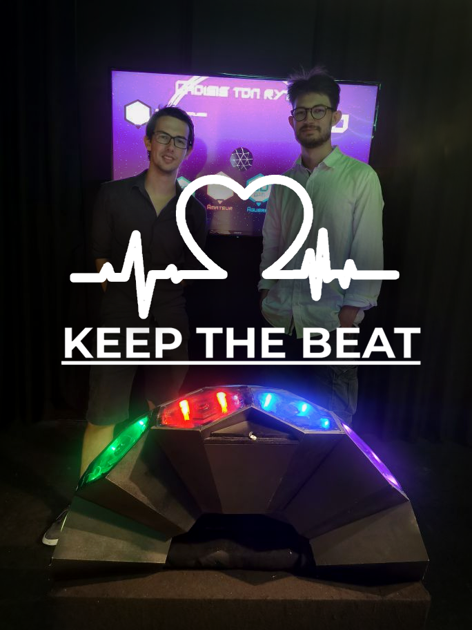

Projets personnels
Visual scripting Tool

J'ai participé à la création d'un Tool de visual scripting lors de mon stage à Cross Quest Studio, un studio indépendant de serious game pour enfant.
Le Tool a été conçu pour faciliter l'intégration des dialogues du jeu ainsi que des différentes intéractions joueur - personnages non joueur.
Keep The Beat

Random bazar, un studio de prestation scéno-ludiques nous a contacté afin d’exposer Keep The Beat durant
pres de deux mois mois lors de Connexion :
une exposition en parallèle du Festival Européen du Film Fantastique du 9 Septembre au 30 Octobre 2021.
Keep The Beat est un jeu de rythme basé sur contrôleur alternatif.
La Sixième collection

La Sixième Collection est un jeu de société basé sur la mode créé par 5 étudiants en Game Design et Game Art. J'ai été chargé du Game Design du jeu ainsi que
de tout l'aspect juridique autour de la préservation de nos droits.
Nous sommes actuellement en discussion avec des éditeurs pour publier le jeu.
Projets scolaires
Escape Time

Escape Time est un jeu mobile d'énigme reprenant les principes de l'Escape Game ainsi que des premier Point'N Click.
Ce projet a été réalisé par un équipe de 7 étudiants en Game Art et Game Design durant 4 mois.
J'ai réalisé toute la programmation gameplay du jeu ainsi qu'un Tool de level Design afin d'accélérer la création de salles.
FoxyFlox

Foxy Flox est un jeu de Réalité Virtuelle en multijoueur basé sur un concept d'empilement de pièces physiquées.
Le jeu a été réalisé en 4 mois par une équipe de 4 étudiants en Game Design, un étudiant en Game Programming (moi) ainsi que 2 artistes externes.
J'ai réalisé la plupart du gameplay du jeu ainsi que toute l'architecture réseau sur Unity.
PirateAcademy

Pirate Academy est un WarioWare-like réalisé par une promotion de 44 Game Designers. La plupart des Game Desginers
devaient produire 2 min-jeux de 5 secondes tandis qu'une autre partie s'occupait de structurer tout ces jeux dans un grand jeu.
J'ai fait partie de la seconde équipe ainsi, j'ai créé un Tool d'intégration pour faciliter le travail des Game Designers, j'ai également réalisé une grande partie du "macro" gameplay.
Inoh's Tale

Inoh's Tale est un Zelda-like modernisant le genre pour le rendre plus réactif et nerveux.
Le jeu a été réalisé en 5 mois par une équipe de 6 étudiants en Game Design et Game Art.
J'ai été le seul programmeur sur le jeu et j'ai donc construit tout le gameplay, les IA et les systèmes du jeu.